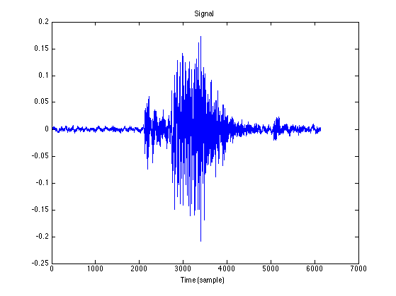
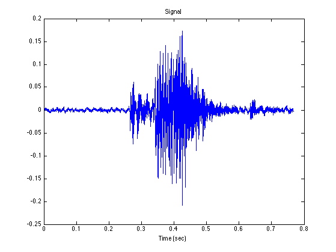
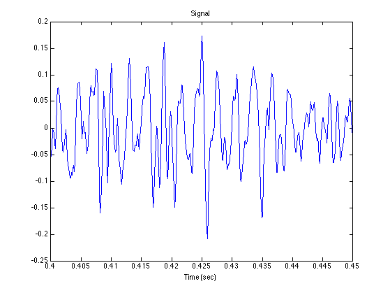
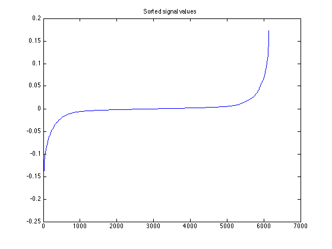
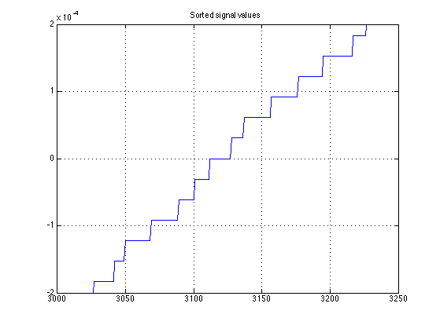
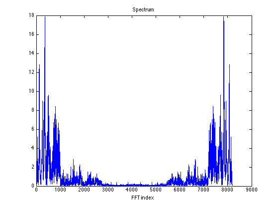
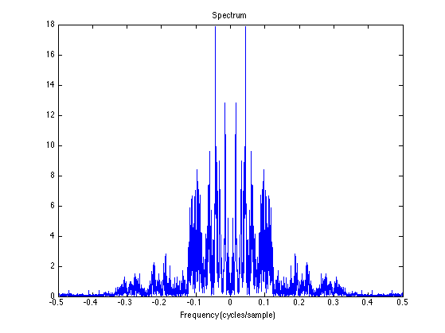
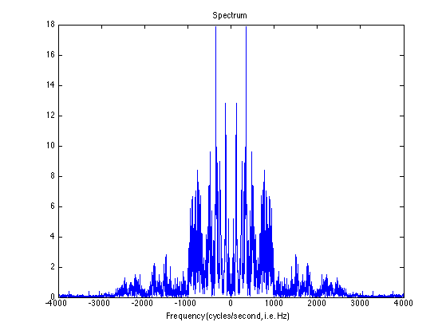

read_wavefile_01.m
View parameters, plot waveform, compute and display spectrum
Contents
Start
clear
help wavread
WAVREAD Read Microsoft WAVE (".wav") sound file.
Y=WAVREAD(FILE) reads a WAVE file specified by the string FILE,
returning the sampled data in Y. The ".wav" extension is appended
if no extension is given.
[Y,FS,NBITS]=WAVREAD(FILE) returns the sample rate (FS) in Hertz
and the number of bits per sample (NBITS) used to encode the
data in the file.
[...]=WAVREAD(FILE,N) returns only the first N samples from each
channel in the file.
[...]=WAVREAD(FILE,[N1 N2]) returns only samples N1 through N2 from
each channel in the file.
[Y,...]=WAVREAD(...,FMT) specifies the data type format of Y used
to represent samples read from the file.
If FMT='double', Y contains double-precision normalized samples.
If FMT='native', Y contains samples in the native data type
found in the file. Interpretation of FMT is case-insensitive,
and partial matching is supported. If omitted, FMT='double'.
SIZ=WAVREAD(FILE,'size') returns the size of the audio data contained
in the file in place of the actual audio data, returning the
2-element vector SIZ=[samples channels].
[Y,FS,NBITS,OPTS]=WAVREAD(...) returns a structure OPTS of additional
information contained in the WAV file. The content of this
structure differs from file to file. Typical structure fields
include '.fmt' (audio format information) and '.info' (text
which may describe title, author, etc.)
Output Scaling
The range of values in Y depends on the data format FMT specified.
Some examples of output scaling based on typical bit-widths found
in a WAV file are given below for both 'double' and 'native' formats.
FMT='native'
#Bits MATLAB data type Data range
----- ------------------------- -------------------
8 uint8 (unsigned integer) 0 <= Y <= 255
16 int16 (signed integer) -32768 <= Y <= +32767
24 int32 (signed integer) -2^23 <= Y <= 2^23-1
32 single (floating point) -1.0 <= Y <= +1.0
FMT='double'
#Bits MATLAB data type Data range
----- ------------------------- -------------------
N<32 double -1.0 <= Y < +1.0
N=32 double -1.0 <= Y <= +1.0
Note: Values in y might exceed -1.0 or +1.0 for the case of
N=32 bit data samples stored in the WAV file.
Supports multi-channel data, with up to 32 bits per sample.
Supports Microsoft PCM data format only.
See also WAVWRITE, AUREAD, AUWRITE.
Reference page in Help browser
doc wavread
Load .wav file
[x, Fs, nbits, opts] = wavread('cat01.wav');
whos
Name Size Bytes Class Attributes Fs 1x1 8 double nbits 1x1 8 double opts 1x1 1280 struct x 6134x1 49072 double
Fs nbits opts.fmt
Fs =
8000
nbits =
16
ans =
wFormatTag: 1
nChannels: 1
nSamplesPerSec: 8000
nAvgBytesPerSec: 16000
nBlockAlign: 2
nBitsPerSample: 16
soundsc(x, Fs)
Plot waveform
figure(1) clf plot(x) xlabel('Time (sample)') title('Signal')
Time axis in seconds
N = length(x); t = (1:N)/Fs; figure(1) clf plot(t, x) xlabel('Time (sec)') title('Signal')
Zoom in to 50 msec
xlim(0.4 + [0 0.050])
Distribution of samples
xs = sort(x);
figure(1)
clf
plot(xs)
title('Sorted signal values')
 See quantization
ylim([-0.0002 0.0002]) grid
What is the quantization increment ?
% smallest positive value (SPV)
SPV = min(x(x > 0))
SPV = 3.0518e-05
% The smallest positive value is 1/2^15
1/SPV
2^15
ans =
32768
ans =
32768
All values x(n) are integer multiples of 1/2^15 Why?
Frequency spectrum
Use Fast Fourier Transform (FFT)
% Use power of 2 for FFT efficiency N = length(x) Nfft = 2^ceil(log2(N)) % smallest power of 2 greater than signal length
N =
6134
Nfft =
8192
Compute Fourier transform
X = fft(x, Nfft); k = 0:Nfft-1; % FFT index figure(1) clf plot(k, abs(X)) xlabel('FFT index') title('Spectrum')
Center dc
X2 = fftshift(X); k2 = -Nfft/2 : Nfft/2-1; figure(1) clf plot(k2, abs(X2)) xlabel('FFT index') title('Spectrum')

Normalized frequency
Normalized frequency is in units of [cycles per sample]
fn = ( -Nfft/2 : Nfft/2-1 ) / Nfft; figure(1) clf plot(fn, abs(X2)) xlabel('Frequency (cycles/sample)') title('Spectrum')
Frequency in Hz
f = fn * Fs; figure(1) clf plot(f, abs(X2)) xlabel('Frequency (cycles/second, i.e. Hz)') title('Spectrum')